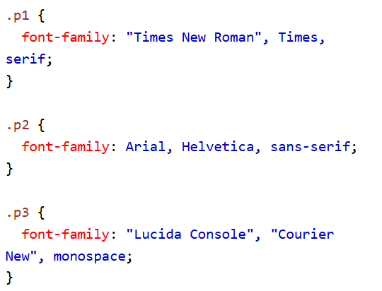
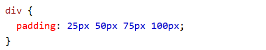

Ejemplo 1
La propieda CSS font-family
En CSS, usamos la propiedad para especificar la fuente de un texto: font-family
Ejemplo
Especifique algunas fuentes diferentes para tres párrafos:
.p1 {
font-family: "Times New Roman", Times, serif;
}
.p2 {
font-family: Arial, Helvetica, sans-serif;
}
.p3 {
font-family: "Lucida Console", "Courier New", monospace;
}
Pruébalo tú mismo »

Ejemplo 2
Barra de navegación = Lista de enlace
Una barra de navegación necesita HTML estándar como base
En nuestros ejemplos, construiremos la barra de navegación a partir de una lista HTML estándar.
Una barra de navegación es básicamente una lista de enlaces, por lo que el uso de los elementos <ul> y <li> hace la perfección sentido:
Ejemplo
<ul>
<li><a href="default.asp">Home</a></li>
<li><a href="news.asp">News</a></li>
<li><a href="contact.asp">Contact</a></li>
<li><a href="about.asp">About</a></li>
</ul>
Pruébalo tú mismo »

Ejemplo 3
Relleno - Propiedad areviada
Para acortar el código, es posible especificar todas las propiedades de relleno en una propiedad.
La propiedad es una propiedad abreviada para el siguiente individuo: Propiedades del relleno:padding
- padding-top
- padding-right
- padding-bottom
- padding-left
Entonces, así es como funciona:
Si la propiedad tiene cuatro valores:padding
relleno: 25px 50px 75px 100px;
- El relleno superior es de 25px
- El relleno derecho es de 50px
- El acolchado inferior es de 75px
- El relleno izquierdo es de 100 px
Ejemplo
Utilice la propiedad abreviada de relleno con cuatro valores:
div {
padding: 25px 50px 75px 100px;
}
Pruébalo tú mismo »

Ejemplo 4
Margen - Lados Individuales
CSS tiene propiedades para especificar el margen de cada lado de un elemento:
- margin-top
- margin-right
- margin-bottom
- margin-left
Todas las propiedades de margen pueden tener los siguientes valores:
Ejemplo 5
Bordes de tabla
Para especificar los bordes de la tabla en CSS, utilice la propiedad.border
En el ejemplo siguiente se especifica un borde sólido para los elementos <table>, <th> y <td>: